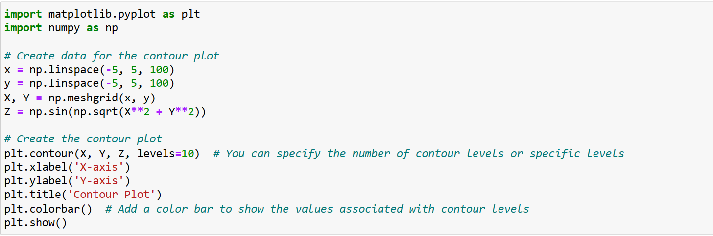
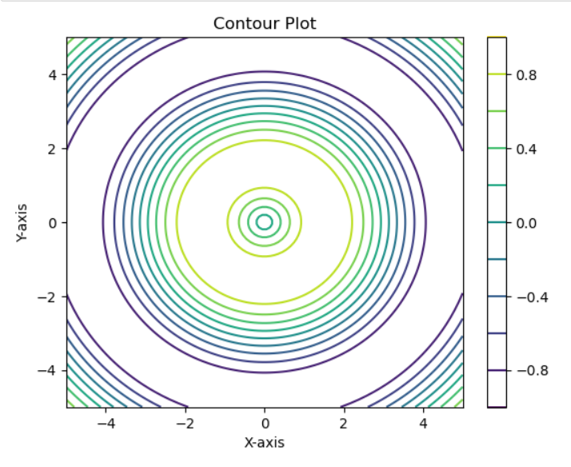
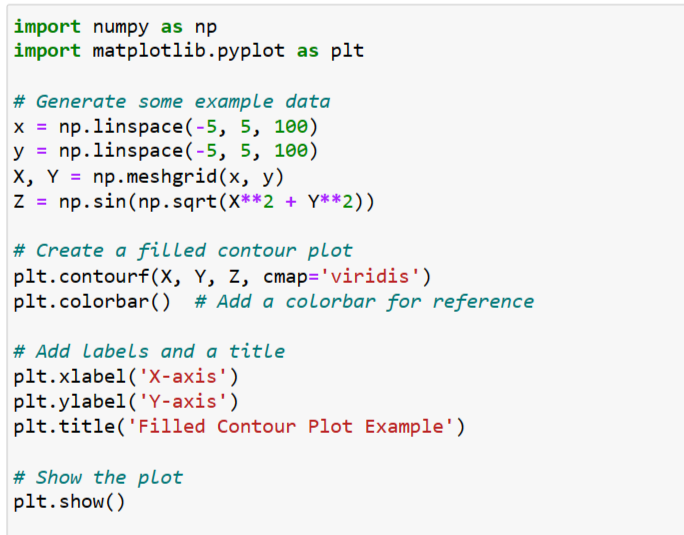
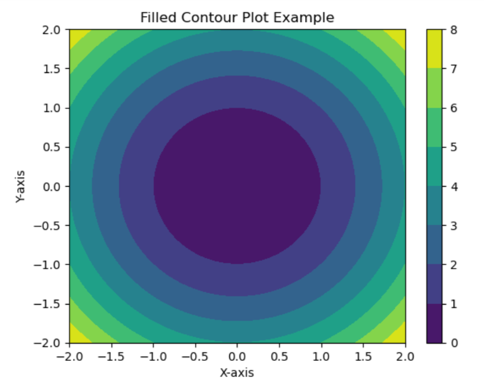

CONTOUR PLOTS
DEFINITION:
- Contour plots, also known as contour maps or contour charts, are graphical representations used in the field of data visualization and scientific data analysis to display the three-dimensional relationships between three variables.
- A contour plot allows you to visualize three-dimensional data in a two-dimensional plot.
- It cannot switch between a contour plot and a 3D plot.
- Contour lines are also called isolines lines joining places with some common features.
[**Is contour a shape?**.....*Contour is the outline or shape of something*.
Eg:A shoe that fits well along the contours or shape of your foot is a good fit.]
WHERE CONTOUR PLOTS ARE USED?
- These plots are particularly useful when you want to visualize how a response or dependent variable changes as a function of two independent variables.
- Contour plots are valuable for visualizing complex relationships, such as elevation on a topographic map.
- They allow researchers and analysts to identify patterns, trends, and areas of interest within the data by providing a clear and intuitive representation of the relationships between the variables.
HOW ARE CONTOUR PLOTS IMPLEMENTED?
To make a Contour Plot there are several packages,such as:
MATLIB:It has several functions including contourf (for a filled 2-D plot) and contour3 (for a 3D plot).
R:It can create a plot with the “filled.contour” command.
EXCEL:It can create a very basic chart called a surface chart.
TYPES OF CONTOUR PLOTS:
Contour plots come in various types and can be adapted to different data visualization needs. Here are some common types of contour plots:
- CONTOUR LINE PLOT:This is the most basic type of contour plot. It consists of contour lines that represent different levels or values of the response variable.
- FILLED CONTOUR PLOT: In a filled contour plot, the regions between the contour lines are filled with colors or shading to provide a more visually intuitive representation of the data.
- 3D CONTOUR PLOT:While traditional contour plots are typically two-dimensional, 3D contour plots extend into a third dimension
- COMBINED PLOTS:Contour plots can be combined with other types of plots, such as scatter plots, bar charts, or line graphs, to provide a more comprehensive visualization of data that involves multiple variables and relationships.
- TOPOGRAPHIC CONTOUR PLOT: A topographic contour map is a specific type of contour plot used in geography and geology.
- WEATHER CONTOUR PLOT:Contour plots are often used in meteorology to visualize weather data, such as temperature, pressure, or precipitation. These plots help meteorologists understand weather patterns and make forecasts.
[**These are some of the common types of contour plots, but the specific type you choose will depend on the nature of your data and the insights you want to gain from it**].
EXAMPLE:




SUBMITTED BY
NAME : AFREEN FATHIMA.S
ROLL NO : 22902
DEPPARTMENT: B.TECH ARTIFICIAL INTELLIGENCE AND DATA SCIENCE
ASSIGN NO : 1
SUBJECT : DATA EXPLORATION AND VISUALIZATION
THANK YOU!!!